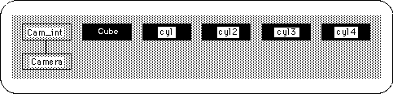
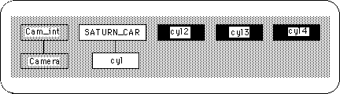
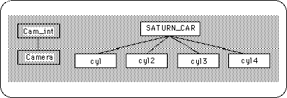
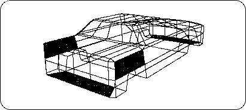
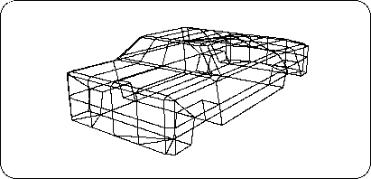

Return to previous page | Return to menu ｜ Go to next page
Look at the Schematic screen (Figure 3-85).

Currently there are five objects, but if you think that the tire is part of the car, you should treat them as one object. The handling method is the “parent-child structure” frequently used in SOFTIMAGE.
Select the car object ( Spacebar + left mouse button ) before creating the parent-child structure.
[Info] → [Selection]
And change the name from “cube” to “SATURN_CAR”.
From now on, we will create a parent-child structure.
Currently, only the car body should be selected, but click [Parent] in that state. (It is the second from the bottom right of the screen).
Then select “cyl” with the left mouse button . It should look like the figure below (Figure 3-86).

In this way, pick “cyl2”, “cyl3”, “cyl4” with the left mouse button .
As a result, I think it looks like the figure below (Figure 3-87).

When finished, press the right mouse button . I think the highlight of [Parent] has disappeared. If you leave it as it is, it will pick up a lot of things and make a parent-child structure, so be sure to exit Parent mode.
This is almost the end, but finally the shape is checked.
The biggest problem is the existence of polygons that are pentagons or larger. If it exists, it cannot pass through a converter that sends data to Saturn. So when I checked the current object ... there were 4 polygons more than pentagon. Where is it? Look at the figure below (Figure 3-88).

It was on the body of the car (tires are hidden for clarity).
This polygon is divided into edges and triangles.
[Mesh] → [Edge]
The result is shown below (Figure 3-89).

This is completed. Thank you for your hard work.
But don't forget to save your model.
Display tires,
[Save] → [Selected Models]
Please save with.
This car still has a place where you can reduce the number of polygons if you want to reduce it. Please challenge how many polygons you can reduce.